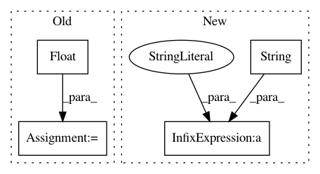

5605cfb777a9319319490c3357be491ddae88213,pynets/thresholding.py,,thresh_and_fit,#Any#Any#Any#Any#Any#Any#Any#Any#Any#,141
Before Change
if dens_thresh == False:
////Save thresholded
conn_matrix_thr = thresholding.threshold_proportional(conn_matrix, float(thr))
edge_threshold = str(float(thr)*100) +"%"
est_path = utils.create_est_path(ID, network, conn_model, thr, mask, dir_path, node_size)
else:
conn_matrix_thr = thresholding.density_thresholding(conn_matrix, float(thr))
edge_threshold = str(float(thr)*100) +"%"
After Change
from pynets import utils, thresholding, graphestimation
thr_perc = 100 * float(thr)
edge_threshold = "%s%s" % (str(thr_perc), "%")
if not dens_thresh:
print("%s%.2f%s" % ("\nThresholding proportionally at: ", thr_perc, "% ...\n"))
else:
In pattern: SUPERPATTERN
Frequency: 3
Non-data size: 4
Instances
Project Name: dPys/PyNets
Commit Name: 5605cfb777a9319319490c3357be491ddae88213
Time: 2018-06-13
Author: dpisner@utexas.edu
File Name: pynets/thresholding.py
Class Name:
Method Name: thresh_and_fit
Project Name: suavecode/SUAVE
Commit Name: 41ee4d8c25ffbcbfc0d04c8d5e3e1117cf8c4e4c
Time: 2020-12-20
Author: ebotero@stanford.edu
File Name: trunk/SUAVE/Input_Output/OpenVSP/vsp_read_wing.py
Class Name:
Method Name: vsp_read_wing
Project Name: dPys/PyNets
Commit Name: 5605cfb777a9319319490c3357be491ddae88213
Time: 2018-06-13
Author: dpisner@utexas.edu
File Name: pynets/thresholding.py
Class Name:
Method Name: thresh_diff